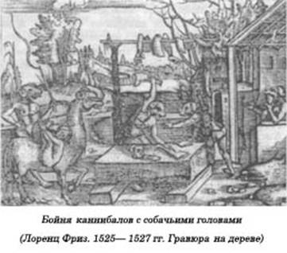
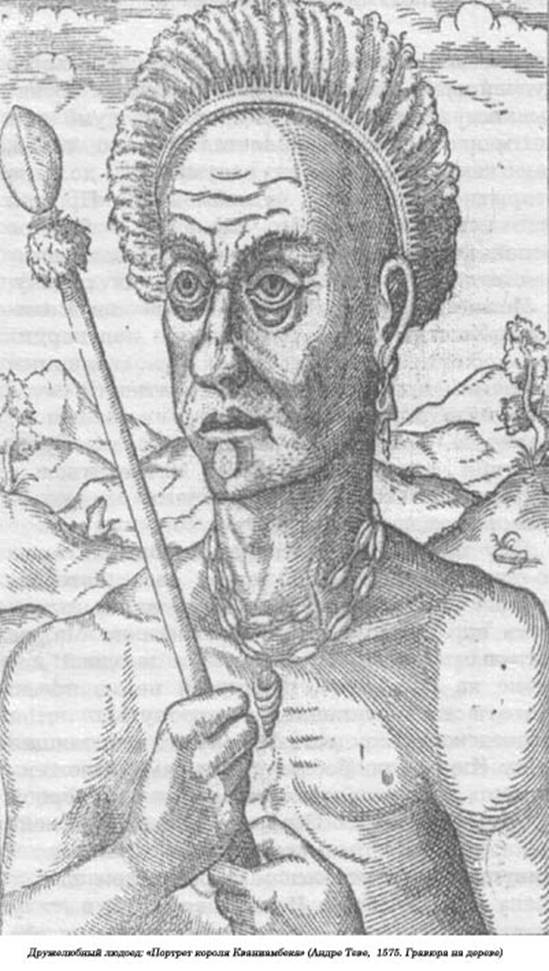

Христофор Колумб — открыватель каннибалов.
Ранним утром в пятницу, 3 августа 1492 года, в восемь часов утра, у отмели Сатес, лежащей у слияния двух рек — Одьеля и Рио-Тинто, — на мелких волнах плавно покачивались озаренные кроваво-красным восходом три парусника — «Санта-Мария», «Нинья» и «Пинта», — которым было суждено проложить первый в истории человечества маршрут в Новый Свет и покрыть себя неувядаемой славой.
Христофор Колумб, этот энергичный, неутомимый генуэзец, был главным организатором и руководителем первой экспедиции к берегам тогда еще неизвестной Америки.
У «Санта-Марии» и «Пинты» при выходе из Палоса были паруса прямоугольной формы, а у «Ниньи» — косые. На Канарских островах Колумб распорядился заменить их на прямые, так как они были гораздо прочнее и ими было легче управлять. Со стороны эти корабли выглядели довольно величественными. Алые борта выше ватерлинии, на парусах красовались геральдические фигуры и кресты, а в торжественных случаях на мачтах поднимался королевский штандарт — внушительных размеров полотнище с гербом Кастилии и Леона, на котором в шахматном порядке располагались башни и свирепые львы. При входе в чужеземные порты и при высадке на новооткрытых землях вверх взлетал красивый вымпел с литерами «F» и «Y», инициалами главных организаторов далекого опасного путешествия к неизвестным берегам — короля Фердинанда II Арагонского и его супруги Изабеллы. На кораблях было несколько бомбард — небольших пушек, стреляющих каменными ядрами, и фальконетов — двуствольных пищалей, а на случай ближнего боя — аркебузы и арбалеты. Порохом запаслись в изрядном количестве, равно как и свинцовыми пулями.
Такие корабли, как писал Колумб, были весьма пригодны для подобного дела, то есть для великих географических открытий. Но таковыми они, разумеется, могли быть лишь в умелых руках, а вахту на них несли отличные мореходы, сведущие кормчие смело вели их к далекой Вест-Индии. Среди капитанов, конечно, выделялся Христофор Колумб, адмирал, вице-король пока еще не открытых земель, чрезвычайный посол Испании, ее Королевских Величеств, к государям Востока.
Корабли шли на запад, подгоняемые попутным резвым ветром, необычайно быстро: случалось, за сутки они пробегали по 60 лиг (около 150 морских миль).
2 октября 1492 года в два часа пополудни впередсмотрящий Родриго Бермехо прокричал капитану «Пинты» Мартину Алонсо Пинтсону: «Terra! Terra!» («Земля! Земля!»).Теперь все увидели далекий холмик на неведомом берегу. В Европе, старой Европе, только загорался день. Не спеша, лениво просыпались в своих кроватях люди, шли в храм, к ранним заутреням и мессам, но никто изжителей континента еще не ведал, что уже открыта земля Нового Света!
Это был остров Гуанахани, который адмирал в ходе торжественной церемонии переименовал, дав ему другое, христианское название — Сан-Сальвадор, остров Святого Спасителя.
По расчетам адмирала, где-то поблизости должен был находиться остров Сипанго, за которым лежала страна Великого Хана.
В среду, 24 октября 1492 года, адмирал, круто повернув, устремился к острову Куба. Три дня спустя перед наступлением темной тропической ночи корабли Колумба подошли к большой земле и бросили якоря у дивных берегов. В море стекала широкая бурная река, а в ее долине росли пальмы с огромными листьями и множество деревьев с неведомыми плодами. То была Куба.
Куба... Громадный остров, протянувшийся на сотни миль. Теперь адмирал не сомневался — он наконец дошел до владений Великого Хана. Как же эта страна не похожа на Китай, северные земли империи Великого Хана, — здесь совсем другой ландшафт, чем на острове Сипанго или в Индии. Сам могущественный король, по убеждению Колумба, правит страной из глубинки, лежащей в четырех днях пути от места стоянки испанских кораблей.
23 ноября 1492 года до Христофора Колумба доходят первые сведения о существовании в этих местах странных людей. Он в своем дневнике делает следующую запись: «Эти дикари называются «caniba», их здесь все ужасно боятся, они свирепы, вооружены до зубов и пожирают каждого, кто попадается им на пути... Их называют «caniba», а на эспаньоле — «cakib». Это настоящие сорвиголовы, они здесь бродят по многим островам и поедают всех людей, которые подвернутся им под руку...»
Таким образом, слово «каннибал» происходит от аравакского «caniba», или «cakiba», — так называли себя индейцы-карибы Малых Антильских островов, что на их языке означало «смелый, бесстрашный».
Итак, Колумба по праву можно считать не только первооткрывателем Америки, но и человеком, открывшим слово «каннибал». В «Журнале путешествия» Бартоломео-де-лас-Касас под датой воскресенье, 4 ноября 1492 года, оставляет запись, что адмирал, который несколько дней назад подошел к северным берегам острова Куба, в своем дневнике, ссылаясь на показания своих переводчиков, записал: «Там, дальше к востоку, живут одноглазые люди, а другие, с собачьими мордами, едят людей». Пока еще слова «каннибал» мы не находим. Скорее всего, эти два фантастических народа навеяны географическими античными познаниями. «Одноглазые» и «собакоголовые» включены в список чудовищных человеческих рас, который кочевал почти в неизмененном виде из сочинений Плиния и Солина в трактаты святого Августина, а затем и в «Книги этимологии» Исидора Севильского. У последнего «циклопы» следуют сразу за «собакоголовыми».

Человек с собачьей головой и циклоп открывают серию из двадцати одной виньетки, выгравированной на дереве, на которых запечатлены все народы-монстры, существовавшие на Земле. Эта серия украшает «Универсальную хронику» Гартмана Цеделя, которая вышла в Нюрнберге в 1493 году. Там же приводятся имена самых важных авторитетов в этой области: «Plinius, Augustinus und Ysidopus», то есть неразлучная троица — Плиний, святой Августин и Исидор Севильский.
Совершенно очевидно, что Колумб с помощью «своего научного мышления» по-своему перевел на родной язык те оскорбления, которыми осыпали мирные араваки своих кровожадных соседей-людоедов. У этих чудовищ, пожирающих людей, должны быть собачьи головы — недаром об этом заявлял сам Плиний!
Интересно отметить, что в «Дневнике» Колумба слово «cynocephale» («собакоголовый») предшествует слову «connibale». Оно впервые появляется только через несколько страниц, под датой 23 ноября 1492 года. Аналогичность контекста с записью от 4 ноября позволяет нам в каннибале видеть точный эквивалент собакоголового. По-прежнему ассоциируемые с циклопами, эти странные люди внушают всем отчаянный страх из-за их свирепого аппетита к человеческой плоти. В это время корабли Колумба находятся на широте Моа-Гранде, и адмирал продолжает свое каботажное плавание по направлению к острову Гаити. 26 ноября происходит странная метаморфоза: в силу какой-то необъяснимой телепатии «caniba», или «caniwa», эти люди с собачьими мордами, вдруг неожиданно отождествляются с циклопами. Две расы человеческих чудовищ, которые одна за другой появляются у Исидора Севильского и в «Хронике» Гартмана Цеделя, теперь сливаются в одну и становятся одним монстром-циклопом с собачьей мордой.

В силу эффекта простого совпадения корни слов вдруг перепутываются, вызывая взаимное проникновение друг в друга лавины образов. В слове «cannibale», или, если быть точнее, «canibale», Колумб ошибочно распознал корень — cards (по-латыни «собака»), отсюда — циклоп с собачьей мордой. Но в понедельник, 26 ноября 1492 года, путаница усиливается. Обогащенное первым «собачьим корнем», слово «canibale» через усечение конечного звука вызывает в воображении образ Великого Хана Тартарии. Такая вполне понятная «аллюзия» объясняется логикой мышления Колумба, который уверен, что движется к западному побережью Азии. Кроме того, чуть позже он перепутает туземное название острова Сивао (или Гаити) с названием островов Японии Сипанго, которые он ожидает вот-вот увидеть. Поэтому адмирал, который в глубине души все же сомневался в существовании циклопов с собачьими мордами, теперь решительным образом воспринимает и вторую этимологическую аллюзию, гораздо более привлекательную для него. По его мнению, каннибалы живут во владениях Великого Хана. Такая запись появляется в его «Дневнике» под датой 24 декабря 1492 года.
Вдруг он осознает растущую опасность со стороны антропофагов с собачьими головами. Еще 11 декабря, когда его каравелла шла по-прежнему на восток вдоль северного побережья Эспаньолы, Колумб вновь возвращается к своей навязчивой идее, находя ответ, показавшийся ему наиболее рациональным.
«Приходится еще раз повторить то, что я уже неоднократно говорил: «caniba» — это не что иное, как народ Великого Хана, который находится где-то поблизости. У них есть свои суда, с помощью которых они захватывают людей, и так как пленники никогда назад не возвращаются, то можно считать, что их просто съедают».
Когда чуть позже ему показывают несчастного индейца, у которого недоставало «куска тела», адмирал решительно отказывается видеть в этом ужасное свидетельство чудовищной прожорливости людоедов. Отказываясь верить в каннибализм, Колумб тем не менее упрямо цепляется за это слово, так как оно, по его разумению, должно открыть ему путь к чудесам Азии. Прошел еще месяц каботажного плавания у берегов Эспаньолы, и вот 16 января 1493 года адмирал отдает приказ возвращаться на родину, в Испанию. Гипотеза о существовании Великого Хана, таким образом, не подтвердилась, хотя версия о людях с собачьими мордами, при всей ее невероятности, еще сохраняла тень правдоподобия. Как бы там ни было, но Колумбу во время первого путешествия так и не удалось встретиться с истинными «карибами-людоедами», о которых рассказывали араваки.
Ему приведется столкнуться с ними только два года спустя, во время своего второго путешествия через океан, когда он, высадившись справа от острова Доминики на Малые Антильские острова, обнаружил в одной деревне на Гваделупе, покинутой незадолго до этого всем населением, нетронутые яства людоедского пиршества. Вся эта леденящая душу сцена с подробными деталями изложена в приподнято-назидательном тоне в первой из восьми «Декад» Пьерра Мартира д'Агиейры, знаменитого итальянского гуманиста, живущего при испанском королевском дворе, члена совета обеих Индий, который в силу своих служебных обязанностей получал все материалы из первых рук для составления своей хроники великих географических открытий. Нарисованная им картина людоедского празднества на Гваделупе, — воображаемая сцена, на которой нет ни одного живого актера, — вся заполнена лишь расчлененными трупами: отрубленные руки и ноги, человеческое мясо в сосудах вперемешку с мясом попугая, только что отрезанная голова подвешена на шесте — с нее еще сочится свежая теплая кровь. Этот кошмар сыграл свою роль — он надолго обеспечил каннибалам рекламу. По всей Европе то и дело менялся их образ, и даже если в скором времени исчезла легенда об их собачьих головах, то чудовищное меню и леденящее душу застолье вряд ли могли компенсировать их столь слабую гуманизацию.